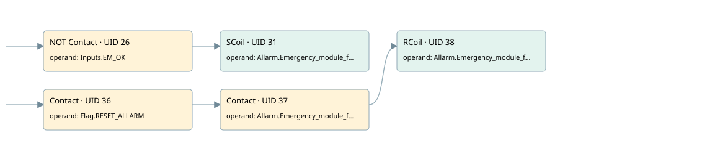

module emergenzy ok
allarms 1 · 검색 색인 순서 44 · 원본 내부 NID 추정 51
백업 PLF 원본의 3076274 바이트 위치에서 복원한 XML. 검색 문서 1824의 객체 키 161022007e62000000000000와 연결했다. 이름 해석 5/5개. 남은 RefId는 상수 또는 미해석 참조다.
연결 구조 다시 그리기
원본 Part/PCon/Wire를 이용한 연결도다. TIA 화면의 래더 배치 또는 실행 결과를 재현한 그림은 아니다. 핀 연결은 아래 표와 원본 XML을 기준으로 읽는다. 노드 위에 마우스를 두면 피연산자 이름을 볼 수 있다.

접점·코일·블록과 피연산자
| Part UID | Gate | Negated 핀 | 연결 피연산자 |
|---|---|---|---|
| 26 | Contact | operand | operand = Inputs.EM_OK |
| 31 | SCoil | operand = Allarm.Emergency_module_fault | |
| 36 | Contact | operand = Flag.RESET_ALLARM | |
| 37 | Contact | operand = Allarm.Emergency_module_fault | |
| 38 | RCoil | operand = Allarm.Emergency_module_fault |
접점 경로를 펼친 조건식
Contact·O/A·비교기의 원본 연결을 읽기 쉽게 펼친 보조 해석이다. POWER는 전원 레일 시작을 뜻한다. 호출 블록·에지·타이머의 내부 동작과 다중 쓰기 순서는 이 표로 실행 검증하지 않았다. 미해석 핀과 RefId는 원문 연결표에서 확인한다.
| UID | 동작 | 대상 | 원본 접점 경로 | 내용 |
|---|---|---|---|---|
| 31 | SCoil | Allarm.Emergency_module_fault | NOT [Inputs.EM_OK] | 조건 성립 시 Set |
| 38 | RCoil | Allarm.Emergency_module_fault | (Flag.RESET_ALLARM AND Allarm.Emergency_module_fault) | 조건 성립 시 Reset |
원본 배선 연결
| Wire UID | 동일 Wire 연결 끝점 |
|---|---|
| 21 | Powerrail {} ↔ Part 26.in ↔ Part 36.in |
| 25 | ORef 27 (Inputs.EM_OK) ↔ Part 26.operand |
| 42 | Part 26.out ↔ Part 31.in |
| 48 | ORef 49 (Allarm.Emergency_module_fault) ↔ Part 31.operand |
| 43 | ORef 39 (Flag.RESET_ALLARM) ↔ Part 36.operand |
| 44 | Part 36.out ↔ Part 37.in |
| 45 | ORef 40 (Allarm.Emergency_module_fault) ↔ Part 37.operand |
| 46 | Part 37.out ↔ Part 38.in |
| 47 | ORef 41 (Allarm.Emergency_module_fault) ↔ Part 38.operand |
식별자 해석 근거 5개
| ORef UID | RefId | 이름 | IdentXmlPart 파일 | 해석 방법 |
|---|---|---|---|---|
| 27 | 250 | Inputs.EM_OK | 0657-IdentXmlPart.xml | UID/RID + search-text + NID agreement |
| 49 | 253 | Allarm.Emergency_module_fault | 0657-IdentXmlPart.xml | UID/RID + search-text + NID agreement |
| 39 | 13 | Flag.RESET_ALLARM | 0657-IdentXmlPart.xml | UID/RID + search-text + NID agreement |
| 40 | 253 | Allarm.Emergency_module_fault | 0657-IdentXmlPart.xml | UID/RID + search-text + NID agreement |
| 41 | 253 | Allarm.Emergency_module_fault | 0657-IdentXmlPart.xml | UID/RID + search-text + NID agreement |
검색 코드 보조 자료
참조 명칭을 찾기 위한 자료이며 실행 순서나 AND/OR 관계는 위 연결표로 확인한다.
"inputs".em_ok "allarm".emergency_module_fault "flag".reset_allarm "allarm".emergency_module_fault "allarm".emergency_module_fault